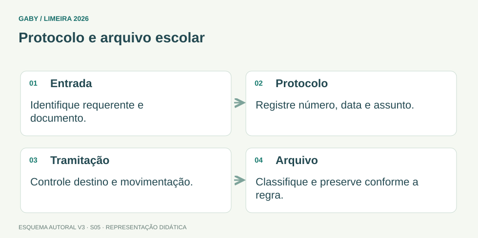

Objetivos do módulo
- Entender protocolo como controle de entrada, saída e tramitação.
- Aplicar noções de classificação e localização de documentos.
- Conhecer cuidados com atas e documentos escolares permanentes.
- Combinar acesso, preservação, sigilo e rastreabilidade.
Protocolo e arquivo escolar

Descrição em texto do esquema
- Entrada: Identifique requerente e documento.
- Protocolo: Registre número, data e assunto.
- Tramitação: Controle destino e movimentação.
- Arquivo: Classifique e preserve conforme a regra.
Oficina visual · aplique o esquema
Uma família entrega um requerimento e pede comprovação. Que informação deve permitir acompanhar a solicitação?
Atividade autoral complementar da V3. Registre sua resposta; a resolução está no arquivo de gabarito e revisão.
Mapa do conteúdo
1. Protocolo
Protocolo é o conjunto de procedimentos usados para receber, registrar, distribuir, controlar tramitação e expedir documentos. Um bom protocolo permite saber o que chegou, quando, de quem, para onde foi encaminhado e qual providência foi tomada.
Número, data, remetente, assunto e destino são exemplos de elementos úteis, conforme sistema adotado.
2. Arquivo escolar
O arquivo escolar reúne documentos necessários ao funcionamento da unidade e à comprovação de atos e trajetórias. A organização deve favorecer localização rápida sem comprometer preservação e segurança.
Critérios de classificação podem variar, mas precisam ser consistentes. Guardar “onde couber” gera perda de tempo e risco documental.
3. Atas de Conselho de Classe e resultados finais
O edital menciona expressamente atas de Conselho de Classe e atas de resultados finais. Atas registram fatos e deliberações e devem observar o padrão da rede, com clareza, identificação e integridade.
Uma ata final pode servir de fonte para outros documentos. Por isso, inconsistências entre ata, sistema e histórico precisam ser evitadas.
4. Acesso e sigilo
Nem todo documento escolar deve ficar acessível a qualquer pessoa. Dados pessoais e informações sensíveis exigem controle de acesso. Ao mesmo tempo, documentos de uso administrativo precisam ser localizáveis por quem tem competência para consultá-los.
Segurança não significa esconder tudo; significa dar acesso adequado à pessoa adequada, pelo motivo adequado.
5. Preservação e temporalidade
A conservação depende do suporte. Papel requer proteção contra umidade, pragas, luz e manuseio inadequado; arquivos digitais exigem backup, controle de acesso e formatos/sistemas confiáveis.
Prazos de guarda e destinação devem seguir normas de temporalidade. O servidor não descarta documento porque “parece velho” ou “não tem espaço”.
Exemplos resolvidos passo a passo
Exemplo 1
Situação: Documento recebido é encaminhado sem qualquer registro e depois não é localizado.
Exemplo 2
Situação: Ata de resultado final diverge do histórico que será emitido.
Exemplo 3
Situação: Pasta antiga ocupa espaço e alguém sugere descarte imediato.
Pegadinhas e erros frequentes
- Confundir protocolo com arquivo.
- Arquivar sem critério consistente.
- Descartar por falta de espaço.
- Permitir acesso indiscriminado a prontuários.
- Expedir documentos sem confrontar atas/resultados.
Resumo de prova
- Protocolo controla entrada, saída e tramitação.
- Arquivo organiza, preserva e torna documentos localizáveis.
- Atas são registros formais relevantes.
- Acesso deve respeitar autorização e sigilo.
- Descarte depende de norma de temporalidade.
Exercícios do módulo
Resolva sem consultar o arquivo de gabarito. As questões são autorais e construídas para treinar os conceitos do edital.
- corrigir notas
- controlar recebimento e tramitação
- substituir toda a escrituração
- eliminar arquivos
Fontes: Conarq — Criação e desenvolvimento de arquivos públicos municipais · Brasil — Lei 8.159/1991, política nacional de arquivos.
- permitir localização e preservação
- usar critérios diferentes a cada dia
- ficar aberto a qualquer pessoa
- eliminar documentos antigos sem regra
Fontes: Conarq — Criação e desenvolvimento de arquivos públicos municipais · Brasil — Lei 8.159/1991, política nacional de arquivos.
- pode conter qualquer informação sem conferência
- não possui relação com histórico
- é apenas rascunho
- é registro formal e deve ser coerente com documentos derivados
Fontes: Conarq — Criação e desenvolvimento de arquivos públicos municipais · Brasil — Lei 8.159/1991, política nacional de arquivos.
- quando faltar espaço
- por decisão individual de qualquer servidor
- somente conforme normas de temporalidade e procedimentos aplicáveis
- sempre após um ano
Fontes: Conarq — Criação e desenvolvimento de arquivos públicos municipais · Brasil — Lei 8.159/1991, política nacional de arquivos.
- compartilhar senhas
- autorizar consulta conforme função e necessidade
- bloquear todo acesso
- publicar prontuários
Fontes: Conarq — Criação e desenvolvimento de arquivos públicos municipais · Brasil — Lei 8.159/1991, política nacional de arquivos.
- perda de rastreabilidade
- melhora automática da segurança
- duplicação necessária
- dispensa de protocolo
Fontes: Conarq — Criação e desenvolvimento de arquivos públicos municipais · Brasil — Lei 8.159/1991, política nacional de arquivos.
- senhas fracas apenas
- macros
- fórmulas
- umidade e agentes de deterioração
Fontes: Conarq — Criação e desenvolvimento de arquivos públicos municipais · Brasil — Lei 8.159/1991, política nacional de arquivos.
- ausência de senha
- eliminação do original por padrão
- backup e controle de acesso
- somente impressão
Fontes: Conarq — Criação e desenvolvimento de arquivos públicos municipais · Brasil — Lei 8.159/1991, política nacional de arquivos.
- existem apenas em papel
- são funções relacionadas, mas distintas
- são exatamente sinônimos
- não se relacionam
Fontes: Conarq — Criação e desenvolvimento de arquivos públicos municipais · Brasil — Lei 8.159/1991, política nacional de arquivos.
- precisa ser regularizada antes da emissão
- deve ser ignorada
- autoriza escolher qualquer valor
- é sempre culpa do aluno
Fontes: Conarq — Criação e desenvolvimento de arquivos públicos municipais · Brasil — Lei 8.159/1991, política nacional de arquivos.
Quando terminar, abra Secretário de Escola 05 - Protocolo e Arquivo Escolar - Gabarito e Revisão.
Checklist de domínio
- ☐ Entender protocolo como controle de entrada, saída e tramitação.
- ☐ Aplicar noções de classificação e localização de documentos.
- ☐ Conhecer cuidados com atas e documentos escolares permanentes.
- ☐ Combinar acesso, preservação, sigilo e rastreabilidade.
Meta do módulo: 80% ou mais nas questões, sem depender de consulta.
Referências e conteúdos auxiliares
- Conarq — Criação e desenvolvimento de arquivos públicos municipaisConsulte especialmente gestão de documentos, protocolo, classificação, avaliação e destinação.
- Brasil — Lei 8.159/1991, política nacional de arquivosFundamentos de gestão documental e guarda de documentos públicos.
Referências externas de apoio consultadas para a V3 em 27/09/2026. A origem das questões é o material autoral do projeto; estes links não indicam que uma instituição publicou ou validou os exercícios. As páginas externas precisam de internet. Em informática, confira a versão do programa; em legislação, observe o recorte e as regras de atualização do edital.